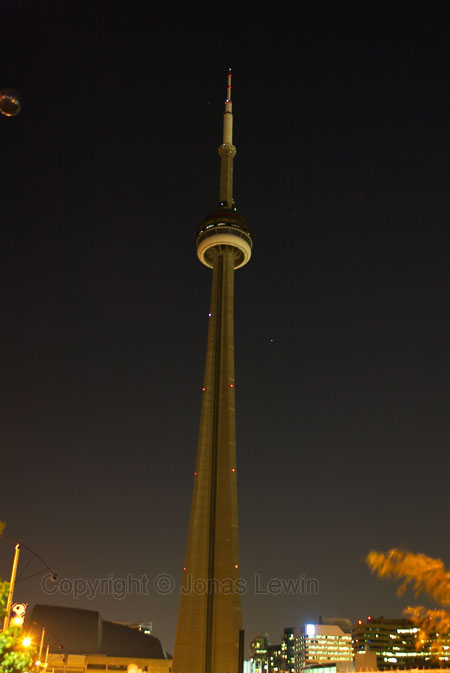
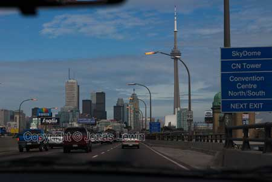

Toronto is famous for the tallest building in the world, the CN Tower. Here I'm looking down on the skyscrapers far below.
The fare is around 25 Canadian Dollars, and It's well worth going up just
before sundown, to see it both in daylight, and at night.
 The
tall buildings seem really tiny. Even the giant red crane on top of the
building, in the lower right corner, seems small.
The
tall buildings seem really tiny. Even the giant red crane on top of the
building, in the lower right corner, seems small.
Here's
a familiar building shape. I guess I have seen a very similar in NewYork,
When
looking at the giant buildings from the ground, they have trouble fitting in
the picture. Quite different from looking at them from the tower.
Here's
the giant tower. And look: There's a UFO on the upper left hand corner of
the image ;-).
The
landscape of Toronto is quite impressive. Toronto is one of the nicest
cities that I have visited. Many friendly people, average prices, good road
signs.
I also discovered that the cars in Toronto (and Canada?) only use 87-91
octane fuel, compared to out 95-98. To label the 91 "super clean" is not
quite fair in my oppinion.
The
Toronto Stock Exchange. Like many buildings in the center, it's just huge.
The Chinatown was really good, and quite like the real thing.
Traffic, and traffic queues, where quite heavy, going in and out of the center.
To summarize: Very large nice city, with many friendly people. Not too many
extremely fat people, as in the US.